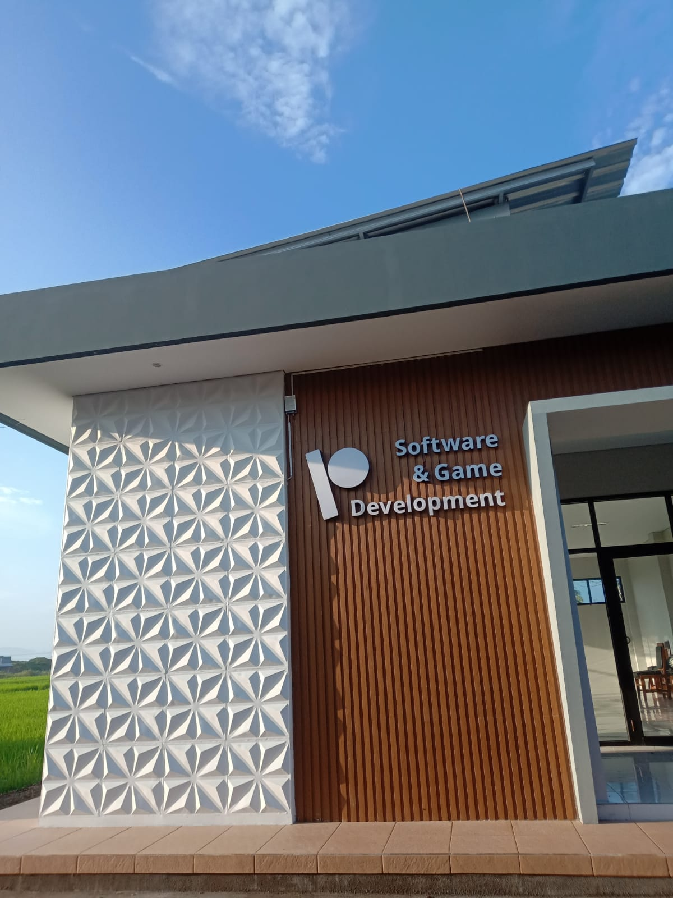
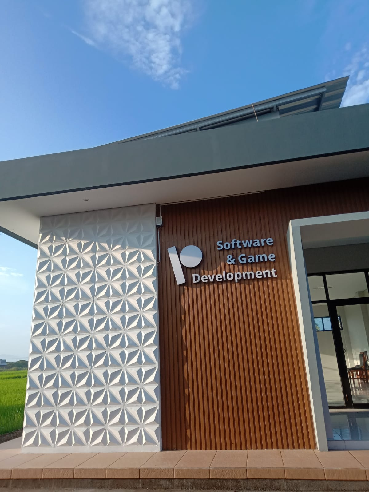

PPLG adalah singkatan dari Rekayasa Perangkat lunak dan gim , PPLG adalah salah satu bidang profesi dan juga mata pelajaran yang mempelajari tentang pengembangan perangkat perangkat lunak termasuk dalam pembuatannya , pemeliharaan hingga menejemen organisasi dan menejemen kualitasnya.
SEJARAH
didirikan sejak tahun 2014 dengan nama rpl (Rekayasa Perangkat Lunak) dengan angkatan pertama sebanyak 2 kelas tahun ke tahun bertambah 3 kelas sampai 4 dan sudah meluluskan sebanyak 7 angkatan kaprog saat itu pak taufik hidayat s.com dan kepala kompetensi rpl deni ridwan st s.com jumlah guru dulu 5 pada tahun 2022 berubah menjadi program keahlian PPLG memiliki 2 kemampuan , yaitu software dan gim
VISI MISI
VISI: dengan berlandaskan iman dan taqwa terwujudnya lulusan yang cakap dalam bidang perangkat lunak dan gim MISI : menyelanggarakan pembelajaran sesuai dengan aspek aspek pengetahuan keterampilan sikap sosia dan keterampilan yang dilandasi keimanan
KURIKULUM
Mata pelajaran sesuai dengan apa yang sedang dipelajari oleh kelas X , XI , dan XII PPLG pada tinggkat XI dan XII mempelajari mapel kejuruan ada perubahan peningkatan menjadi pembelajaran teaching factory yang mengadopsi industri/Tech.Company
PENGAJAR
Andi Moh Permani ,S.KOM Dasar dasar kejuruan
Imas Masruroh ,S.T Dasar dasar kejuruan
Zul Taufiq ,S.T Kabeng
Taufik Hidayat ,S.KOM Kaprog
Sri Agustina Ipas
Siti Mustika Bahasa sunda
Deni Maulana ,S.T Informatika
Lisna Windi Nurhuda Penjaskes
Adi Lasan ,S.T produktif kelas XII
Lisye Mustika Inggriani Dasar dasar kejuruan
Suminar ,S.COM.M.KOM PKK
Bintang Anugrahing Widhi,S.T Teaching fictory
Tini Gantini ,S.P Ppkn
Ari Yanuar ,S.PD Ppkn
Herlina Pratama ,S.PD B.inggris
Arip,S.T ,M.KOM B.inggris
FASILITAS
PPLG memiliki 1gedung rps dengan 4 lab.komputer dengan 1 gedung working space untuk Teaching Factory


.jpeg)
.jpeg)

.jpeg)
.jpeg)

.jpeg)
.jpeg)

.jpeg)

.jpeg)

.jpeg)

 
